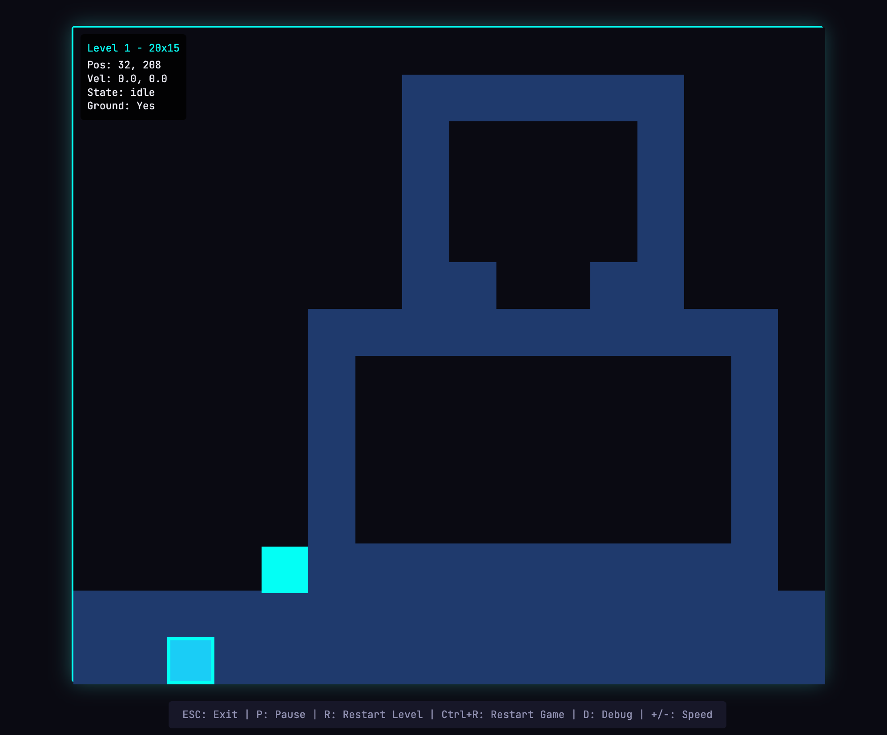
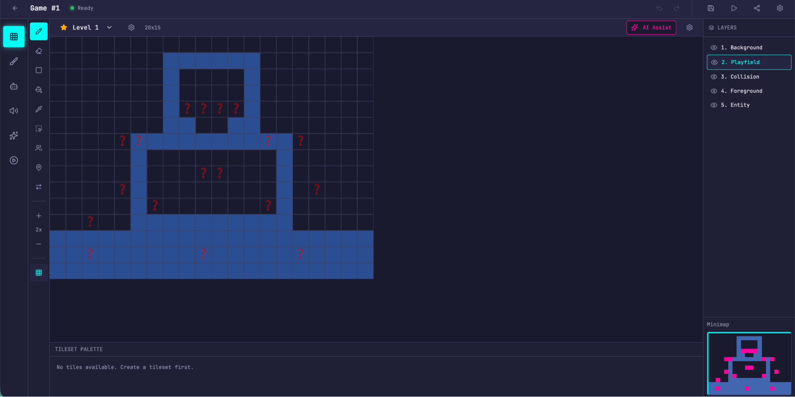
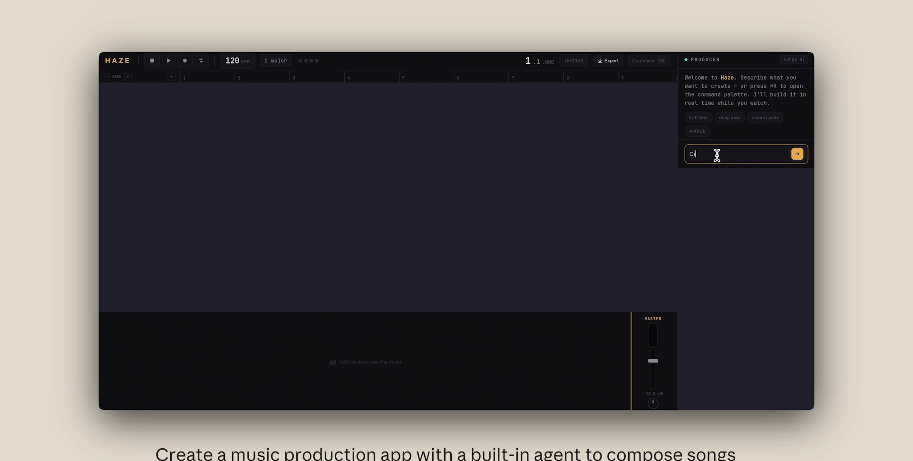

03


📊 好方法 vs 差方法
同一件事，方法对不对，做出来天差地别
上面博物馆那个是"惊艳版"。下面这两个，更直白地告诉你：给 AI 搭没搭台子，做出来到底差多少。
🕹️ 例①：做一个复古游戏制作器
❌ 没方法 · 单打独斗
又快又便宜——但游戏根本打不开，逻辑全是断的。
✅ 有方法 · 完整 Harness
慢、也更贵——但功能完整、真的能玩：精灵编辑器、AI 关卡、能试玩。


💡 快和便宜没用，贵的是"把活真的干成了"。
🎹 例②：做一个网页音乐软件（DAW）
这个例子的差别不在"能不能做出来"，而在有没有人较真地验收：
❌ AI 自己交活时
"搞定！能编曲、能混音、还能录音 🎉"——截图看着挺像回事。

✅ 让"验收官"上手实测
- 🐞 音频片段在时间轴上拖不动
- 🐞 录音其实是个空壳，点了没反应
看着能用，其实一堆隐藏坑——这就是为什么，得有个专门"挑刺"的角色（后面第 5 节会细讲）。
▶ DAW「HAZE」演示（约 30 秒）